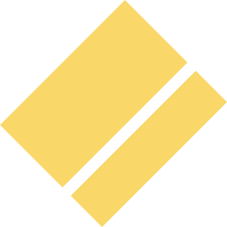

<header>
  <div class="wrap">
     <a href="index.html"></a>
    <nav class="nav-collapse">
      <ul>
        <li><a href="/index.html" class="underline">HOME</a></li>
        <li><a href="/about.html">ABOUT</a></li>
        <li><a href="/index.html">PORTFOLIO</a></li>
        
        <li><a href="/blog.html">BLOG</a></li>
        <li><a href="contact.html">CONTACT</a></li>
      </ul>
      
    </nav>
  </div>
</header>

<div class="hero-background col-md-4">
  <div class="hero-container">
    
    <div class="logo">
   <!--   -->
    <div class="text-float">
    
    <h1>CHRIS JORDAN</h1>
    <h2>WEB / UI DESIGNER</h2>
    </div>
    </div>

  <ul>
    <li><a href="/index.html" >HOME</a></li>
    <li><a href="/about.html">ABOUT</a></li>
    <li><a href="/blog.html">BLOG</a></li>
    <li><a href="/portfolio.html">PORTFOLIO</a></li>
    
    <li><a href="/contact.html" class="underline">CONTACT</a></li>
  </ul>

</div>
</div>

<div class="container">
<section class="portfolio">

    
    
    <div class="hover column">
      <div class="port-img col-sm-6 ">
        <figure ><a href="http://chrisdjordan.github.io/quest-atx/"></a></figure>
        <h4>Quest ATX</h4>
        <p>RWD,Bootstrap</p>
      </div>
      <div class="port-img col-sm-6 ">
      <figure ></figure>
      <h4>Bouldin Creek Cafe</h4>
      <p>RWD,Bootstrap</p>
    </div>
    <div class="port-img col-sm-6 ">
    <figure ></figure>
    <h4>CSS Zen Garden</h4>
    <p id="pad-none-big">RWD,Bootstrap</p>
  </div>
  <div class="port-img col-sm-6 pad-none">
  <figure ></figure>
  <h4>Quest ATX</h4>
  <p id="pad-none">RWD,Bootstrap</p>
</div>
</div>
<p>

</p>
</section>
</div>


